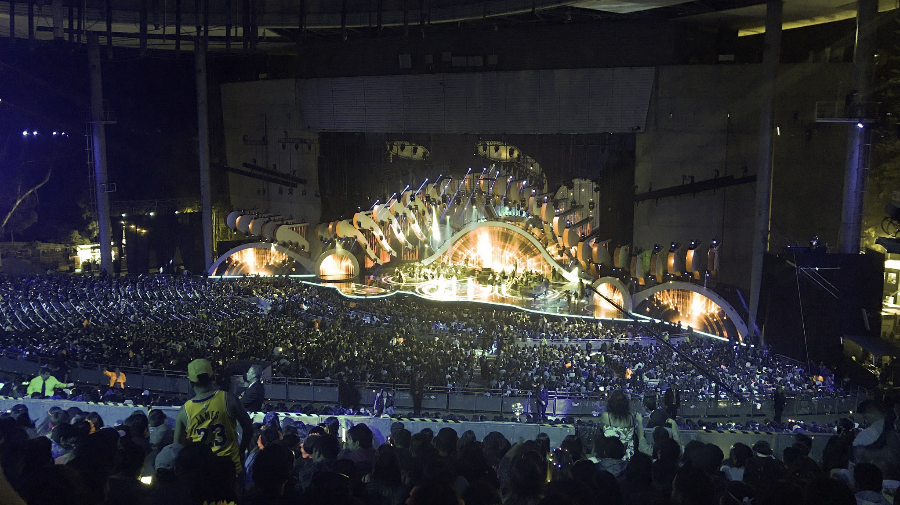

Breve resumen del festivalpara mas información visita WikipediaEl Festival Internacional de la Canción de Viña del Mar (también, Festival de Viña) es un certamen musical organizado por el municipio de Viña del Mar, Región de Valparaíso, Chile. Desde el 21 de febrero de 1960, el evento se lleva a cabo cada año durante el mes de febrero en el Anfiteatro de la Quinta Vergara, a excepción de las ediciones del año 2021 y 2022, que fueron canceladas debido a la pandemia de coronavirus que afectó al mundo, siendo las únicas ediciones que fueron canceladas en la historia del certamen que se transmitía ininterrumpidamente desde 1960.1 Es considerado el festival de música más grande e importante en el continente americano, y el más longevo y relevante de habla hispana en todo el mundo.234 El evento toma lugar en un escenario que cuenta con una capacidad para 15 000 espectadores y se transmite en vivo por radio, televisión y plataformas en línea, logrando récords de sintonía con una audiencia estimada de alrededor de 250 millones de personas.567 A través de la televisión, el evento llega a todo el continente americano, gran parte de Europa, norte de África y Australia; mientras que vía streaming a todo el mundo. Mueve millones de dólares en concepto de auspicios, programas de televisión asociados, publicidad y turismo.8 Aunque las competiciones de música popular y folclórica fueron el origen del certamen, desde hace años se han relegado a un segundo plano y se ha dado preferencia a los artistas invitados, quienes son el plato fuerte verdadero del certamen.921011 Desde su LX edición, la organización, producción y transmisión del Festival de Viña está en manos de la alianza compuesta por Televisión Nacional de Chile, Canal 13 y Fox Networks Group Latin America quienes se adjudicaron el certamen hasta 2027 por 9 038 656 UF (casi USD$400 millones de dólares).1213 Listado de cantantes que han cantado
Listado de cantantes que han ganado
|
 |